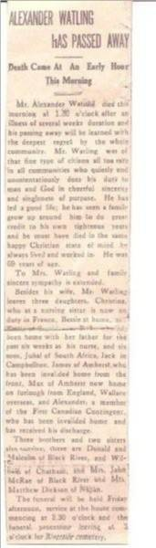
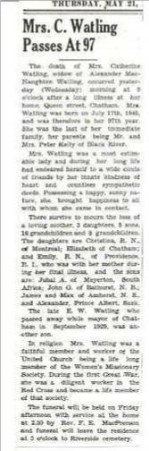

The Family Chronicle
No. 158 May 11, 2008
____________________________________________________________________
Watling

Alexander MacNaughton Watling (1848-1917)
and his wife, Catherine Kelly Watling (1845-1942)
courtesy of Judy Watling
Bathurst Watlings
Recently I was delighted to hear from Judy Watling, my second cousin once removed, who is a Great Granddaughter of Alexander and Catherine (Kelly) Watling pictured above. Thanks to her, including the photos and obituaries in this issue. I can flesh out our connection to the “Bathurst Watlings”
If readers have questions about this branch of the family, Judy may be reached at watlingj@nbnet.nb.ca


The Family Chronicle (Copyright) is an occasional newsletter published by Don Glendenning and posted on the family website. It is intended to share information about my family, community and the times in which I grew up. While every effort is made to be accurate, errors are likely to occur. Comments, enquiries and information may be sent to 62 Queen Elizabeth Drive, Charlottetown, PEI, C1A 3A9. Tel: 902 892 5859. Email: don@glendenning.net Web: www.glendenning.net/don
Descendants of Alexander (Sandy) MacNaughton Watling
1 Alexander (Sandy) MacNaughton WATLING b: March 27, 1848 in Black River, New Brunswick d: June 6, 1917 +Catherine KELLY b: July 17, 1845 d: May 20,
1942 in Chatham m: June 18, 1874
...... 2 Christina (Teenie) WATLING b: November
22, 1874 d: November 13, 1943
...... 2 Jubal A WATLING b: February 27, 1876 .+CARRIE b: November 3, 1879 d: April
11, 1966 m: November 2, 1908
...... 2 Albert Willie WATLING b: August 19, 1877 in A twin of John d: November 30,
1881
...... 2 John (Jack) Gordon WATLING b: August
19, 1877 in Chatham, NB d: September 13,
1952 in Bathurst, NB +Myrtle May DEMPSEY b: July 4, 1881 in
Stonehaven, NB d: April 5, 1966 in Salmon
River, NB m: September 9, 1903 in
Stonehaven, NB
...... 2 Jane MacLean WATLING b: July 8, 1879
d: December 1, 1881
...... 2 Elizabeth D C Bessie WATLING b: 1880
in A twin of Peter d: May 26, 1951
...... 2 Peter E Kelly WATLING b: 1880 in A twin
of Bessie d: November 16, 1881
...... 2 James Petrie Street WATLING b: October
2, 1882 d: May 3, 1947 in Amherst, Nova
Scotia
......+Mary a MCGIVERN b: April 11, 1885
...... 2 George Maxwell WATLING b: July 14,
1884 +Ethel TOWSE .. 2 Emily Jane (Janie) WATLING
b: January 20, 1886 d: December 27, 1984
...... 2 Edward Wallace Waits WATLING b:
March 16, 1888 d: September 14, 1929 in
Chatham
.......+Ellen Dorothy GUNNING b: 1889 d: 1994
......2 Alexander WATLING b: June 29, 1890
d: June 25, 1969 +Eleanor WYATT d: 1987